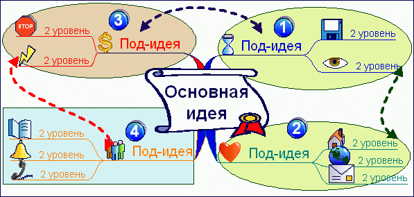

Это разработка Тони Бьюзена – известного писателя, лектора и консультанта по вопросам интеллекта, психологии обучения и проблем мышления. Также встречаются такие переводы словосочетания «Mind maps», как «Ментальные карты», «Мыслительные карты», «Карты ума».
Интеллект-карты – это метод, позволяющий:
• эффективно структурировать и обрабатывать информацию;
• мыслить, используя свой творческий и интеллектуальный потенциал.
Это очень красивый инструмент для решения таких задач, как проведение презентаций, принятие решений, планирование своего времени, запоминание больших объемов информации, проведение мозговых штурмов, самоанализ, разработка сложных проектов, собственное обучение, развитие и т. д.
Области применения:1. Презентации
• за меньшее время вы даете больше информации, при этом вас лучше понимают и запоминают;
• проведение деловых встреч и переговоров.
2. Планирование
• управление временем: план на день, неделю, месяц, год…;
• разработка сложных проектов, нового бизнеса…
3. Мозговой штурм
• генерация новых идей, творчество;
• коллективное решение сложных задач.
4. Принятие решений
• четкое видение всех «за» и «против»;
• более взвешенное и продуманное решение.